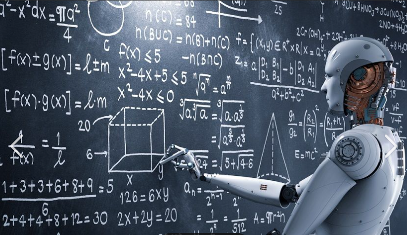

¿Qué características tiene la IA?
La inteligencia artificial (IA) se refiere a la capacidad de las máquinas para realizar tareas que, en teoría, requerirían inteligencia humana. Las características de la inteligencia artificial pueden incluir la capacidad de aprender, razonar, percibir, reconocer el habla y procesar el lenguaje natural. Además, la IA puede ser programada para realizar tareas específicas, como jugar juegos, realizar análisis de datos y reconocimiento de patrones. En general, las características de la inteligencia artificial están diseñadas para imitar la inteligencia humana y mejorar la eficiencia y precisión de las tareas automatizadas.

características más comunes
- La Adaptabilidad.
- Creatividad.
- Razonamiento y resolución de problemas.
- Automatización.
- Interacción humano-máquina.
- Aprendizaje profundo (Deep Learning).
- Reconocimiento de emociones.
- Colaboración entre máquinas.